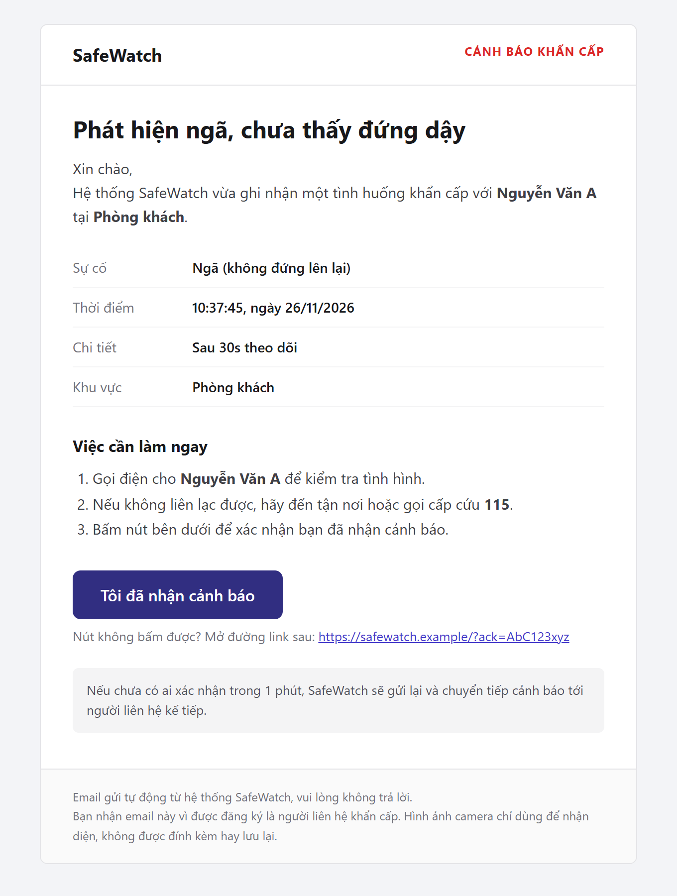
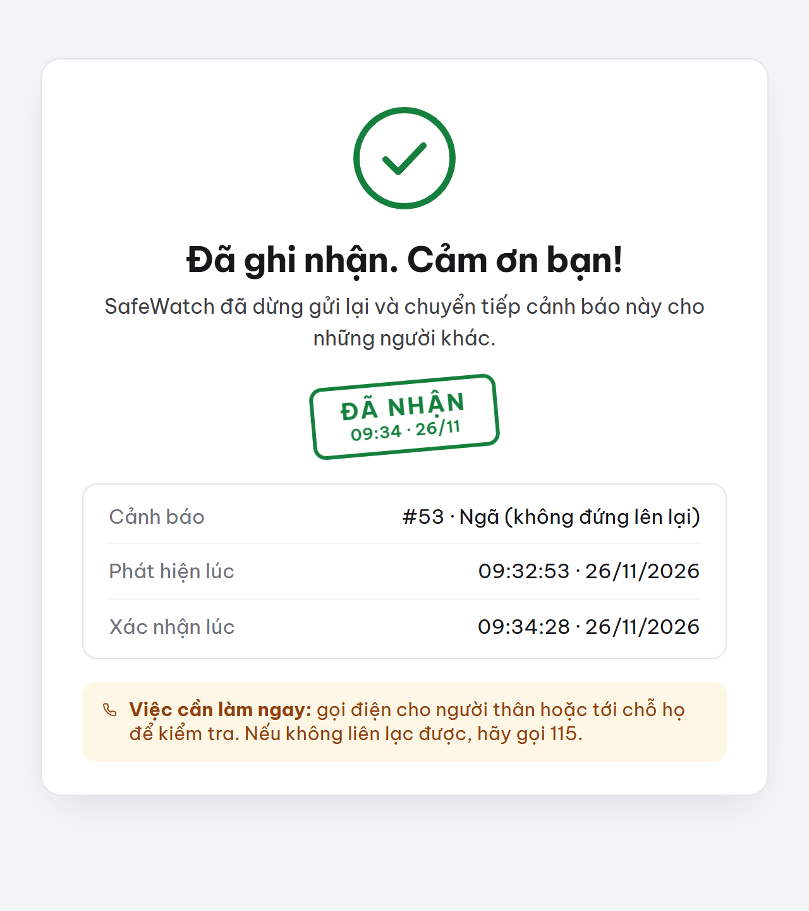
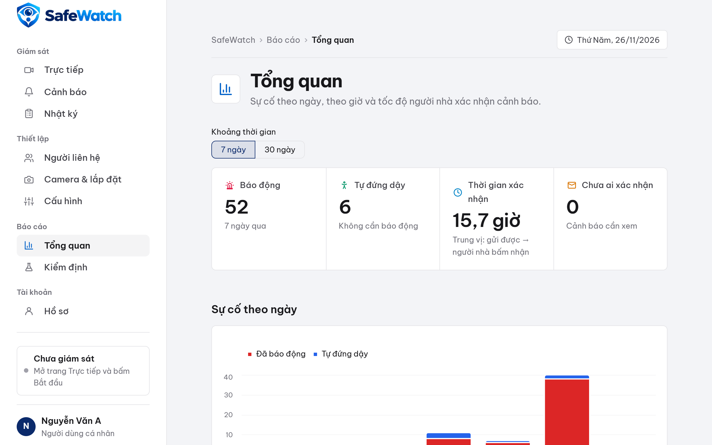

Người thân bị ngã, cả nhà biết ngay.
Giải pháp giám sát an toàn bằng trí tuệ nhân tạo dành cho người cao tuổi và người sống một mình, giúp gia đình luôn yên tâm và kịp thời có mặt khi người thân cần giúp đỡ.
Phòng khách · 14:02
Hãy gọi kiểm tra người thân.
Bốn bước, không cần thiết bị đặc biệt
Đặt webcam ở góc phòng, mở SafeWatch trên trình duyệt. Phần còn lại hệ thống tự làm.
Camera quan sát
Webcam đặt cao khoảng 2 m, chéo góc phòng. AI đọc khung xương 33 điểm của cơ thể, không cần nhận mặt.
Nhận ra sự cố
Model phát hiện cú ngã từ chuỗi chuyển động 1,5 giây. Cử chỉ tay cầu cứu cũng được nhận ra.
Xác minh 30 giây
Người ngã tự đứng dậy được thì không báo động, tránh làm phiền cả nhà vì những lần trượt chân nhẹ.
Báo người nhà
Gửi Telegram, Email, SMS tới người liên hệ. Chưa ai xác nhận thì nhắc lại và chuyển cho người kế tiếp.
Không dừng ở “đã gửi”
Một tin nhắn không ai đọc thì không cứu được ai. SafeWatch chỉ coi cảnh báo là xong khi có một người thật bấm xác nhận.
- Gửi nhiều kênh cùng lúc. Telegram có nút “Đã nhận” ngay trong tin, email có nút lớn, SMS có đường link.
- Gửi lỗi thì thử lại sau 5, 10, 20, 40, 60 giây.
- 60 giây chưa ai nhận thì nhắc lại và chuyển tiếp cho người liên hệ kế tiếp, tối đa 5 vòng.
- Ghi lại ai nhận, qua kênh nào, lúc nào — xem lại và xuất bảng thời gian bất cứ lúc nào.


Không thấy rõ thì không bao giờ báo “an toàn”
Camera bị che hay người đi khuất là lúc dễ bỏ sót nhất. SafeWatch nói rõ mình đang không nhìn thấy gì, thay vì im lặng.
Xin mời quý vị rời xa camera một chút.
Khi người dùng đứng quá gần hoặc bị khuất, SafeWatch nhắc bằng giọng nói tiếng Việt để camera nhìn thấy đủ, không cần ai phải chỉnh lại thiết bị.
Được kiểm định trên dữ liệu chưa từng thấy
Mọi con số dưới đây chấm trên dữ liệu model không được xem lúc huấn luyện, tách theo người và phiên quay, phát lại qua đúng phần mềm SafeWatch.
Cử chỉ cầu cứu có bộ lọc: 1,9 lần báo nhầm/giờ (chưa lọc: 132/giờ). Cách tính và dữ liệu chi tiết công khai trong tài liệu kiểm định.

Camera trong nhà, nên quyền riêng tư phải đi trước
Không lưu hình ảnh
Hình từ camera chỉ dùng để đọc tư thế cơ thể rồi bỏ đi. Không ghi video, không chụp ảnh.
Cảnh báo không kèm hình
Tin nhắn tới người nhà chỉ gồm loại sự cố, thời điểm và khu vực. Không có ảnh hay video đính kèm.
Chỉ người bạn chọn
Cảnh báo chỉ tới những người liên hệ bạn thêm vào, theo thứ tự ưu tiên bạn đặt, tắt được từng người.
Câu hỏi thường gặp
Cần chuẩn bị gì để dùng SafeWatch?
Một webcam (webcam laptop hoặc webcam USB) và trình duyệt Chrome, Edge hoặc Firefox. Bấm “Dùng thử”, cho phép trình duyệt dùng camera là bắt đầu. Để phát hiện tốt nhất, đặt camera cao khoảng 2 m, chéo góc phòng, thấy được vùng sàn.
Người nhà nhận cảnh báo bằng cách nào?
Qua Telegram (có nút “Đã nhận” ngay trong tin nhắn), Email và SMS. Mỗi người liên hệ chọn kênh của mình. Ai bấm xác nhận trước thì chuỗi cảnh báo dừng lại cho cả nhà.
Ngã rồi tự đứng dậy thì có bị báo không?
Không. Sau khi phát hiện ngã, SafeWatch theo dõi thêm 30 giây (chỉnh được). Người đó đứng dậy được thì hệ thống chỉ ghi vào nhật ký, không gửi cảnh báo.
Nhà có nhiều người thì sao?
Phiên bản hiện tại tối ưu cho một người trong khung hình. Chế độ theo dõi tối đa 3 người đang ở dạng thử nghiệm, có thể bật trong phần Cấu hình.
Mất mạng internet thì sao?
Hệ thống vẫn phát hiện và giữ cảnh báo trong hàng chờ, có mạng lại sẽ gửi ngay. Phiên bản thiết bị riêng có module 4G để nhắn tin và gọi điện khi mất internet đang được phát triển.
Thử SafeWatch ngay trên trình duyệt
Mở app, cho phép camera, thêm một người thân nhận cảnh báo. Mất chưa tới 5 phút.
Lần mở đầu tiên có thể mất khoảng 1 phút để hệ thống khởi động.